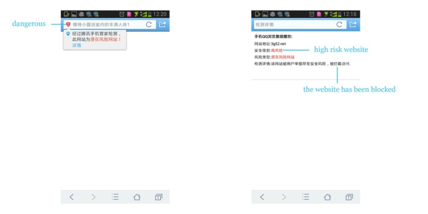

Website Security Check for QQ Browser (based on Android)
Note: Teamwork
Team Role:
UI designer, product manager
Duration:
November 2012 - June 2013
Website:
Main Functions:
- Check the website's security status during loading the web page.
- Demonstrate the website's security status on the address bar of QQ Browser.
- Block dangerous websites in case of loss.
- Pay special attention to online money transfer websites and eBusiness websites.
My Contributions:
- Designed the interaction of Website Security Check function.
- Conducted usability study during the design process.
- After release, supervised user feedback and offered optimization plan.
Project Description:
It was the browser's responsibility to check the website's security status, warn user, and guarantee the safety. So we designed the website security check system. Once user clicked on a new link, the browser would check the new website's security status while loading it. If the website was identity verified, a green icon would appear on the address bar to notify the user that the website was safe, without interrupting him/her. If, on the other hand, the link was about to open linked to a dangerous website, a red icon would appear on the address bar and QQ browser would interrupt the loading and show a warning page, indicating that the website was dangerous for the potential risk of password leak and other kinds of loss. It would specifically explain about why this webpage was blocked. On the warning page, the advised action to close the window would also be demonstrated.
As to certain websites related to online money transfer, such as Paypal, Alipay, and Tenpay, and eBusiness websites such as Amazon and Taobao, the website security status would be checked under more strict standards.
Besides, the database of fake websites would be updated in real time. Thus QQ Browser might be able to deal with emergent situation. For instance, if a newly-appeared website tent to be dangerous, QQ Browser could update its database in a very short time and make sure the users could get appropriate warning if they attempted to view this website.

Figure 1. Identity-verified website

Figure 2. Dangerous website
Related Materials:
QQ Browser (Android) v5.2 Download